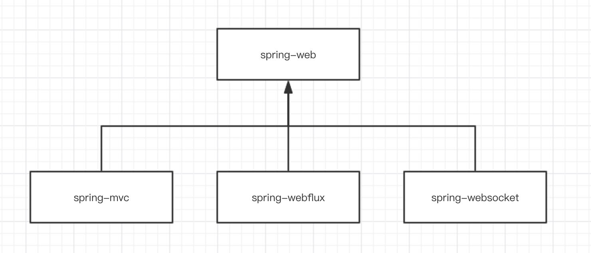

- AQS 万字图文全面解析.md.html
- Docker 镜像构建原理及源码分析.md.html
- ElasticSearch 小白从入门到精通.md.html
- JVM CPU Profiler技术原理及源码深度解析.md.html
- JVM 垃圾收集器.md.html
- JVM 面试的 30 个知识点.md.html
- Java IO 体系、线程模型大总结.md.html
- Java NIO浅析.md.html
- Java 面试题集锦（网络篇）.md.html
- Java-直接内存 DirectMemory 详解.md.html
- Java中9种常见的CMS GC问题分析与解决（上）.md.html
- Java中9种常见的CMS GC问题分析与解决（下）.md.html
- Java中的SPI.md.html
- Java中的ThreadLocal.md.html
- Java线程池实现原理及其在美团业务中的实践.md.html
- Java魔法类：Unsafe应用解析.md.html
- Kafka 源码阅读笔记.md.html
- Kafka、ActiveMQ、RabbitMQ、RocketMQ 区别以及高可用原理.md.html
- MySQL · 引擎特性 · InnoDB Buffer Pool.md.html
- MySQL · 引擎特性 · InnoDB IO子系统.md.html
- MySQL · 引擎特性 · InnoDB 事务系统.md.html
- MySQL · 引擎特性 · InnoDB 同步机制.md.html
- MySQL · 引擎特性 · InnoDB 数据页解析.md.html
- MySQL · 引擎特性 · InnoDB崩溃恢复.md.html
- MySQL · 引擎特性 · 临时表那些事儿.md.html
- MySQL 主从复制 半同步复制.md.html
- MySQL 主从复制 基于GTID复制.md.html
- MySQL 主从复制.md.html
- MySQL 事务日志(redo log和undo log).md.html
- MySQL 亿级别数据迁移实战代码分享.md.html
- MySQL 从一条数据说起-InnoDB行存储数据结构.md.html
- MySQL 地基基础：事务和锁的面纱.md.html
- MySQL 地基基础：数据字典.md.html
- MySQL 地基基础：数据库字符集.md.html
- MySQL 性能优化：碎片整理.md.html
- MySQL 故障诊断：一个 ALTER TALBE 执行了很久，你慌不慌？.md.html
- MySQL 故障诊断：如何在日志中轻松定位大事务.md.html
- MySQL 故障诊断：教你快速定位加锁的 SQL.md.html
- MySQL 日志详解.md.html
- MySQL 的半同步是什么？.md.html
- MySQL中的事务和MVCC.md.html
- MySQL事务_事务隔离级别详解.md.html
- MySQL优化：优化 select count().md.html
- MySQL共享锁、排他锁、悲观锁、乐观锁.md.html
- MySQL的MVCC（多版本并发控制）.md.html
- QingStor 对象存储架构设计及最佳实践.md.html
- RocketMQ 面试题集锦.md.html
- SnowFlake 雪花算法生成分布式 ID.md.html
- Spring Boot 2.x 结合 k8s 实现分布式微服务架构.md.html
- Spring Boot 教程：如何开发一个 starter.md.html
- Spring MVC 原理.md.html
- Spring MyBatis和Spring整合的奥秘.md.html
- Spring 帮助你更好的理解Spring循环依赖.md.html
- Spring 循环依赖及解决方式.md.html
- Spring中眼花缭乱的BeanDefinition.md.html
- Vert.x 基础入门.md.html
- eBay 的 Elasticsearch 性能调优实践.md.html
- 不可不说的Java“锁”事.md.html
- 互联网并发限流实战.md.html
- 从ReentrantLock的实现看AQS的原理及应用.md.html
- 从SpringCloud开始，聊微服务架构.md.html
- 全面了解 JDK 线程池实现原理.md.html
- 分布式一致性理论与算法.md.html
- 分布式一致性算法 Raft.md.html
- 分布式唯一 ID 解析.md.html
- 分布式链路追踪：集群管理设计.md.html
- 动态代理种类及原理，你知道多少？.md.html
- 响应式架构与 RxJava 在有赞零售的实践.md.html
- 大数据算法——布隆过滤器.md.html
- 如何优雅地记录操作日志？.md.html
- 如何设计一个亿级消息量的 IM 系统.md.html
- 异步网络模型.md.html
- 当我们在讨论CQRS时，我们在讨论些神马？.md.html
- 彻底理解 MySQL 的索引机制.md.html
- 最全的 116 道 Redis 面试题解答.md.html
- 有赞权限系统(SAM).md.html
- 有赞零售中台建设方法的探索与实践.md.html
- 服务注册与发现原理剖析（Eureka、Zookeeper、Nacos）.md.html
- 深入浅出Cache.md.html
- 深入理解 MySQL 底层实现.md.html
- 漫画讲解 git rebase VS git merge.md.html
- 生成浏览器唯一稳定 ID 的探索.md.html
- 缓存 如何保证缓存与数据库的双写一致性？.md.html
- 网易严选怎么做全链路监控的？.md.html
- 美团万亿级 KV 存储架构与实践.md.html
- 美团点评Kubernetes集群管理实践.md.html
- 美团百亿规模API网关服务Shepherd的设计与实现.md.html
- 解读《阿里巴巴 Java 开发手册》背后的思考.md.html
- 认识 MySQL 和 Redis 的数据一致性问题.md.html
- 进阶：Dockerfile 高阶使用指南及镜像优化.md.html
- 铁总在用的高性能分布式缓存计算框架 Geode.md.html
- 阿里云PolarDB及其共享存储PolarFS技术实现分析（上）.md.html
- 阿里云PolarDB及其共享存储PolarFS技术实现分析（下）.md.html
- 面试最常被问的 Java 后端题.md.html
- 领域驱动设计在互联网业务开发中的实践.md.html
- 领域驱动设计的菱形对称架构.md.html
- 高效构建 Docker 镜像的最佳实践.md.html
- 捐赠
Spring MVC 原理
- ### 前言
随着 Spring Boot 逐步全面覆盖到我们的项目之中，我们已经基本忘却当年经典的 Servlet + Spring MVC 的组合，那让人熟悉的 web.xml 配置。而本文，我们想先抛开 Spring Boot 到一旁，回到从前，一起来看看 Servlet 是怎么和 Spring MVC 集成，怎么来初始化 Spring 容器的。
在看源码之前我们先看下 Spring MVC 在 Spring 中的架构依赖，它不是一个单独的项目，它有依赖的爸爸 spring-web 项目，也有两个兄弟 spring-webflux 和 spring-websocket 项目，本文只讲 Spring MVC，Spring Webflux 和 Spring WebSocket 日后会更新 Chat。

### 一、上下文在 Web 容器中的启动
#### 1.1 Tomcat 中的应用部署描述文件 web.xml
以 Tomcat 作为 Web 容器为例进行分析。在 Tomcat 中，web.xml 是应用的部署描述文件。
<!-- [1] Spring 配置 -->
<listener>
<listener-class>org.springframework.web.context.ContextLoaderListener</listener-class>
</listener>
<!-- 指定 Spring IOC 容器读取 bean 定义的 XML 文件的路径，默认配置在 WEB-INF 目录下 -->
<context-param>
<param-name>contextConfigLocation</param-name>
<param-value>classpath:config/applicationContext.xml</param-value>
</context-param>
<!-- [2] Spring MVC 配置 -->
<servlet>
<servlet-name>spring</servlet-name>
<servlet-class>org.springframework.web.servlet.DispatcherServlet</servlet-class>
<!-- 可以自定义servlet.xml配置文件的位置和名称，默认为WEB-INF目录下，名称为[<servlet-name>]-servlet.xml，如spring-servlet.xml-->
<init-param>
<param-name>contextConfigLocation</param-name>
<param-value>/WEB-INF/spring-servlet.xml</param-value> // 默认
</init-param>
<load-on-startup>1</load-on-startup>
</servlet>
<servlet-mapping>
<servlet-name>spring</servlet-name>
<url-pattern>*.do</url-pattern>
</servlet-mapping>
[1] 处，配置了 org.springframework.web.context.ContextLoaderListener 对象。这是一个 javax.servlet.ServletContextListener 对象，会初始化一个 Root Spring WebApplicationContext 容器。
[2] 处，配置了 org.springframework.web.servlet.DispatcherServlet 对象。这是一个 javax.servlet.http.HttpServlet 对象，它除了拦截我们制定的 *.do 请求外，也会初始化一个属于它的 Spring WebApplicationContext 容器。并且，这个容器是以 [1] 处的 Root 容器作为父容器。
在 Servlet 容器启动时，例如 Tomcat、Jetty 启动，则会被 ContextLoaderListener 监听到，从而调用 ContextLoaderListener #contextInitialized(ServletContextEvent event) 方法，初始化 Root WebApplicationContext 容器。
#### 1.2 IOC 容器启动的基本过程
先看下 ContextLoaderListener 的类图：
org.springframework.web.context.ContextLoaderListener，实现 ServletContextListener 接口，继承 ContextLoader 类，实现 Servlet 容器启动和关闭时，分别初始化和销毁 WebApplicationContext 容器。(注意，这个 ContextLoaderListener 类，是在 spring-web 项目中。)
ContextLoaderListener 初始化 Root WebApplicationContext 的入口在 ContextLoaderListener#contextInitialized() 方法中，代码如下：
// ContextLoaderListener.java
@Override
public void contextInitialized(ServletContextEvent event) {
// 初始化 Root WebApplicationContext
initWebApplicationContext(event.getServletContext());
}
跟进到 ContextLoader#initWebApplicationContext() 方法，代码如下：
// ContextLoader.java
// 当前 web 容器
private static volatile WebApplicationContext currentContext;
// 线程上下文类加载器到当前 web 容器的映射
private static final Map<ClassLoader, WebApplicationContext> currentContextPerThread =
new ConcurrentHashMap<ClassLoader, WebApplicationContext>(1);
public WebApplicationContext initWebApplicationContext(ServletContext servletContext) {
// <1> 若已经存在 ROOT_WEB_APPLICATION_CONTEXT_ATTRIBUTE 对应的 WebApplicationContext 对象，则抛出 IllegalStateException 异常。
// 例如，在 web.xml 中存在多个 ContextLoader。
if (servletContext.getAttribute(WebApplicationContext.ROOT_WEB_APPLICATION_CONTEXT_ATTRIBUTE) != null) {
throw new IllegalStateException(
"Cannot initialize context because there is already a root application context present - " +
"check whether you have multiple ContextLoader* definitions in your web.xml!");
}
// <2> 打印日志
servletContext.log("Initializing Spring root WebApplicationContext");
Log logger = LogFactory.getLog(ContextLoader.class);
if (logger.isInfoEnabled()) {
logger.info("Root WebApplicationContext: initialization started");
}
// 记录开始时间
long startTime = System.currentTimeMillis();
try {
// Store context in local instance variable, to guarantee that
// it is available on ServletContext shutdown.
if (this.context == null) {
// <3> 初始化 context，即创建 context 对象
this.context = createWebApplicationContext(servletContext);
}
// <4> 如果是 ConfigurableWebApplicationContext 的子类，如果未刷新，则进行配置和刷新
if (this.context instanceof ConfigurableWebApplicationContext) {
ConfigurableWebApplicationContext cwac = (ConfigurableWebApplicationContext) this.context;
if (!cwac.isActive()) { // <4.1> 未刷新( 激活 )
// The context has not yet been refreshed -> provide services such as
// setting the parent context, setting the application context id, etc
if (cwac.getParent() == null) { // <4.2> 无父容器，则进行加载和设置。
// The context instance was injected without an explicit parent ->
// determine parent for root web application context, if any.
ApplicationContext parent = loadParentContext(servletContext);
cwac.setParent(parent);
}
// <4.3> 配置 context 对象，并进行刷新
configureAndRefreshWebApplicationContext(cwac, servletContext);
}
}
// <5> 记录在 servletContext 中
servletContext.setAttribute(WebApplicationContext.ROOT_WEB_APPLICATION_CONTEXT_ATTRIBUTE, this.context);
// <6> 记录到 currentContext 或 currentContextPerThread 中
ClassLoader ccl = Thread.currentThread().getContextClassLoader();
if (ccl == ContextLoader.class.getClassLoader()) {
currentContext = this.context;
} else if (ccl != null) {
currentContextPerThread.put(ccl, this.context);
}
// <7> 打印日志
if (logger.isInfoEnabled()) {
long elapsedTime = System.currentTimeMillis() - startTime;
logger.info("Root WebApplicationContext initialized in " + elapsedTime + " ms");
}
// <8> 返回 context
return this.context;
} catch (RuntimeException | Error ex) {
// <9> 当发生异常，记录异常到 WebApplicationContext.ROOT_WEB_APPLICATION_CONTEXT_ATTRIBUTE 中，不再重新初始化。
logger.error("Context initialization failed", ex);
servletContext.setAttribute(WebApplicationContext.ROOT_WEB_APPLICATION_CONTEXT_ATTRIBUTE, ex);
throw ex;
}
}
- <1> 处，若已经存在 ROOT*WEB*APPLICATION*CONTEXT*ATTRIBUTE 对应的 WebApplicationContext 对象，则抛出 IllegalStateException 异常。例如，在 web.xml 中存在多个 ContextLoader。
- <2> 处，打印日志。
- <3> 处，调用 #createWebApplicationContext(ServletContext sc) 方法，初始化 context，即创建 WebApplicationContext 对象。详细解析，胖友先跳到 「3.2.3 createWebApplicationContext」。
- <4> 处，如果 context 是 ConfigurableWebApplicationContext 的子类，如果未刷新，则进行配置和刷新。
- <4.1> 处，如果未刷新（激活）。默认情况下，是符合这个条件的，所以会往下执行。
- <4.2> 处，无父容器，则进行加载和设置。默认情况下，ContextLoader#loadParentContext(ServletContext servletContext) 方法，返回 null。代码如下：
// ContextLoader.java
@Nullable
protected ApplicationContext loadParentContext(ServletContext servletContext) {
return null;
}
这是一个让子类实现的方法。当然，子类 ContextLoaderListener 并没有重写该方法。所以，实际上，<4.2> 处的逻辑，可以暂时忽略。
- <4.3> 处，调用
#configureAndRefreshWebApplicationContext(ConfigurableWebApplicationContext wac, ServletContext sc)方法，配置 ConfigurableWebApplicationContext 对象，并进行刷新。 - <5> 处，记录 context 在 ServletContext 中。这样，如果 web.xml 如果定义了多个 ContextLoader，就会在 <1> 处报错。
- <6> 处，记录到 currentContext 或 currentContextPerThread 中，差异在于类加载器的不同。
- <7> 处，打印日志。
- <8> 处，返回 context。
- <9> 处，当发生异常，记录异常到 WebApplicationContext.ROOT_WEB_APPLICATION_CONTEXT_ATTRIBUTE 中，不再重新初始化。即对应到 <1> 处的逻辑。
继续跟进到创建 Root WebApplication 的方法，ContextLoader#createWebApplicationContext() 方法，代码如下：
// ContextLoader.java
protected WebApplicationContext createWebApplicationContext(ServletContext sc) {
// <1> 获得 context 的类
Class<?> contextClass = determineContextClass(sc);
// <2> 判断 context 的类，是否符合 ConfigurableWebApplicationContext 的类型
if (!ConfigurableWebApplicationContext.class.isAssignableFrom(contextClass)) {
throw new ApplicationContextException("Custom context class [" + contextClass.getName() +
"] is not of type [" + ConfigurableWebApplicationContext.class.getName() + "]");
}
// <3> 创建 context 的类的对象
return (ConfigurableWebApplicationContext) BeanUtils.instantiateClass(contextClass);
}
<1> 处，调用 ContextLoader#determineContextClass(ServletContext servletContext) 方法，获得 context 的类。代码如下：
// ContextLoader.java
/**
* Config param for the root WebApplicationContext implementation class to use: {@value}.
* @see #determineContextClass(ServletContext)
*/
public static final String CONTEXT_CLASS_PARAM = "contextClass";
protected Class<?> determineContextClass(ServletContext servletContext) {
// 获得参数 contextClass 的值
String contextClassName = servletContext.getInitParameter(CONTEXT_CLASS_PARAM);
// 情况一，如果值非空，则获得该类
if (contextClassName != null) {
try {
return ClassUtils.forName(contextClassName, ClassUtils.getDefaultClassLoader());
} catch (ClassNotFoundException ex) {
throw new ApplicationContextException(
"Failed to load custom context class [" + contextClassName + "]", ex);
}
// 情况二，从 defaultStrategies 获得该类
} else {
contextClassName = defaultStrategies.getProperty(WebApplicationContext.class.getName());
try {
return ClassUtils.forName(contextClassName, ContextLoader.class.getClassLoader());
} catch (ClassNotFoundException ex) {
throw new ApplicationContextException(
"Failed to load default context class [" + contextClassName + "]", ex);
}
}
}
分成两种情况。前者，从 ServletContext 配置的 context 类；后者，从 ContextLoader.properties 配置的 context 类。
默认情况下，我们不会主动在 ServletContext 配置的 context 类，所以基本是使用 ContextLoader.properties 配置的 context 类，即 XmlWebApplicationContext 类。
<2> 处，判断 context 的类，是否符合 ConfigurableWebApplicationContext 的类型。显然，XmlWebApplicationContext 是符合条件的，所以不会抛出 ApplicationContextException 异常。
<3> 处，调用 BeanUtils#instantiateClass(Class<T> clazz) 方法，创建 context 的类的对象。
继续跟进到刷新 Root WebApplicationContext 容器的方法，ContextLoader#configureAndRefreshWebApplicationContext() 方法，代码如下：
// ContextLoader.java
/**
* Config param for the root WebApplicationContext id,
* to be used as serialization id for the underlying BeanFactory: {@value}.
*/
public static final String CONTEXT_ID_PARAM = "contextId";
/**
* Name of servlet context parameter (i.e., {@value}) that can specify the
* config location for the root context, falling back to the implementation's
* default otherwise.
* @see org.springframework.web.context.support.XmlWebApplicationContext#DEFAULT_CONFIG_LOCATION
*/
public static final String CONFIG_LOCATION_PARAM = "contextConfigLocation";
public static final String CONTEXT_ID_PARAM = "contextId";
protected void configureAndRefreshWebApplicationContext(ConfigurableWebApplicationContext wac, ServletContext sc) {
// <1> 如果 wac 使用了默认编号，则重新设置 id 属性
if (ObjectUtils.identityToString(wac).equals(wac.getId())) {
// The application context id is still set to its original default value
// -> assign a more useful id based on available information
// 情况一，使用 contextId 属性
String idParam = sc.getInitParameter(CONTEXT_ID_PARAM);
if (idParam != null) {
wac.setId(idParam);
// 情况二，自动生成
} else {
// Generate default id...
wac.setId(ConfigurableWebApplicationContext.APPLICATION_CONTEXT_ID_PREFIX +
ObjectUtils.getDisplayString(sc.getContextPath()));
}
}
// <2>设置 context 的 ServletContext 属性
wac.setServletContext(sc);
// <3> 设置 context 的配置文件地址
String configLocationParam = sc.getInitParameter(CONFIG_LOCATION_PARAM);
if (configLocationParam != null) {
wac.setConfigLocation(configLocationParam);
}
ConfigurableEnvironment env = wac.getEnvironment();
if (env instanceof ConfigurableWebEnvironment) {
((ConfigurableWebEnvironment) env).initPropertySources(sc, null);
}
// <4> 执行自定义初始化 context
customizeContext(sc, wac);
// <5> 刷新 context，执行初始化
wac.refresh();
}
此处，注释上即写了 wac，右写了 context，实际上，是等价的东西。下面的文字，我们统一用 wac。
<1> 处，如果 wac 使用了默认编号，则重新设置 id 属性。默认情况下，我们不会对 wac 设置编号，所以会执行进去。而实际上，id 的生成规则，也分成使用 contextId 在
<2> 处，设置 wac 的 ServletContext 属性。
【关键】<3> 处，设置 context 的配置文件地址。例如我们在 「1. 概述」 中所看到的。
<context-param>
<param-name>contextConfigLocation</param-name>
<param-value>classpath:config/applicationContext.xml</param-value>
</context-param>
<4> 处，调用 #customizeContext(ServletContext sc, ConfigurableWebApplicationContext wac) 方法，执行自定义初始化 wac。 【关键】<5> 处， 刷新 wac，执行初始化。此处，就会进行一些的 Spring 容器的初始化。
### 二、DispatcherServlet 的启动和初始化
回过头来看一眼 web.xml 的配置。代码如下：
<servlet>
<servlet-name>spring</servlet-name>
<servlet-class>org.springframework.web.servlet.DispatcherServlet</servlet-class>
<!-- 可以自定义servlet.xml配置文件的位置和名称，默认为WEB-INF目录下，名称为[<servlet-name>]-servlet.xml，如spring-servlet.xml-->
<init-param>
<param-name>contextConfigLocation</param-name>
<param-value>/WEB-INF/spring-servlet.xml</param-value> // 默认
</init-param>
<load-on-startup>1</load-on-startup>
</servlet>
<servlet-mapping>
<servlet-name>spring</servlet-name>
<url-pattern>*.do</url-pattern>
</servlet-mapping>
即， Servlet WebApplicationContext 容器的初始化，是在 DispatcherServlet 初始化的过程中执行。
DispatcherServlet 的类图如下：

- HttpServletBean，负责将 ServletConfig 设置到当前 Servlet 对象中。
- FrameworkServlet，负责初始化 Spring Servlet——WebApplicationContext 容器。
- DispatcherServlet，负责初始化 Spring MVC 的各个组件，以及处理客户端的请求。
每一层的 Servlet 实现类，执行对应负责的逻辑，下面我们逐个类来进行解析。
#### 2.1 HttpServletBean
HttpServletBean#init() 方法负责将 ServletConfig 设置到当前 Servlet 对象中。代码如下：
// HttpServletBean.java
@Override
public final void init() throws ServletException {
// Set bean properties from init parameters.
// <1> 解析 <init-param /> 标签，封装到 PropertyValues pvs 中
PropertyValues pvs = new ServletConfigPropertyValues(getServletConfig(), this.requiredProperties);
if (!pvs.isEmpty()) {
try {
// <2.1> 将当前的这个 Servlet 对象，转化成一个 BeanWrapper 对象。从而能够以 Spring 的方式来将 pvs 注入到该 BeanWrapper 对象中
BeanWrapper bw = PropertyAccessorFactory.forBeanPropertyAccess(this);
ResourceLoader resourceLoader = new ServletContextResourceLoader(getServletContext());
// <2.2> 注册自定义属性编辑器，一旦碰到 Resource 类型的属性，将会使用 ResourceEditor 进行解析
bw.registerCustomEditor(Resource.class, new ResourceEditor(resourceLoader, getEnvironment()));
// <2.3> 空实现，留给子类覆盖
initBeanWrapper(bw);
// <2.4> 以 Spring 的方式来将 pvs 注入到该 BeanWrapper 对象中
bw.setPropertyValues(pvs, true);
} catch (BeansException ex) {
if (logger.isErrorEnabled()) {
logger.error("Failed to set bean properties on servlet '" + getServletName() + "'", ex);
}
throw ex;
}
}
// Let subclasses do whatever initialization they like.
// <3> 子类来实现，实现自定义的初始化逻辑。目前，有具体的代码实现。
initServletBean();
}
<1> 处，解析 Servlet 配置的
代码简单，实现两方面的逻辑：第一，遍历 ServletConfig 的初始化参数集合，添加到 ServletConfigPropertyValues 中；第二，判断要求的属性是否齐全。如果不齐全，则抛出 ServletException 异常。
// HttpServletBean.java
private static class ServletConfigPropertyValues extends MutablePropertyValues {
/**
* Create new ServletConfigPropertyValues.
* @param config the ServletConfig we'll use to take PropertyValues from
* @param requiredProperties set of property names we need, where
* we can't accept default values
* @throws ServletException if any required properties are missing
*/
public ServletConfigPropertyValues(ServletConfig config, Set<String> requiredProperties)
throws ServletException {
// 获得缺失的属性的集合
Set<String> missingProps = (!CollectionUtils.isEmpty(requiredProperties) ?
new HashSet<>(requiredProperties) : null);
// 遍历 ServletConfig 的初始化参数集合，添加到 ServletConfigPropertyValues 中，并从 missingProps 移除
Enumeration<String> paramNames = config.getInitParameterNames();
while (paramNames.hasMoreElements()) {
String property = paramNames.nextElement();
Object value = config.getInitParameter(property);
// 添加到 ServletConfigPropertyValues 中
addPropertyValue(new PropertyValue(property, value));
// 从 missingProps 中移除
if (missingProps != null) {
missingProps.remove(property);
}
}
// Fail if we are still missing properties.
// 如果存在缺失的属性，抛出 ServletException 异常
if (!CollectionUtils.isEmpty(missingProps)) {
throw new ServletException(
"Initialization from ServletConfig for servlet '" + config.getServletName() +
"' failed; the following required properties were missing: " +
StringUtils.collectionToDelimitedString(missingProps, ", "));
}
}
}
<2.1> 处，将当前的这个 Servlet 对象，转化成一个 BeanWrapper 对象。从而能够以 Spring 的方式来将 pvs 注入到该 BeanWrapper 对象中。简单来说，BeanWrapper 是 Spring 提供的一个用来操作 Java Bean 属性的工具，使用它可以直接修改一个对象的属性。
<2.2> 处，注册自定义属性编辑器，一旦碰到 Resource 类型的属性，将会使用 ResourceEditor 进行解析。
<2.3> 处，空实现，留给子类覆盖。代码如下：
// HttpServletBean.java
/**
* Initialize the BeanWrapper for this HttpServletBean,
* possibly with custom editors.
* <p>This default implementation is empty.
* @param bw the BeanWrapper to initialize
* @throws BeansException if thrown by BeanWrapper methods
* @see org.springframework.beans.BeanWrapper#registerCustomEditor
*/
protected void initBeanWrapper(BeanWrapper bw) throws BeansException {
}
然而实际上，子类暂时木有任何实现。
<2.4> 处，以 Spring 的方式来将 pvs 注入到该 BeanWrapper 对象中，即设置到当前 Servlet 对象中。可能比较费解，我们还是举个例子。假设如下：
// web.xml
<servlet>
<servlet-name>spring</servlet-name>
<servlet-class>org.springframework.web.servlet.DispatcherServlet</servlet-class>
<init-param>
<param-name>contextConfigLocation</param-name>
<param-value>/WEB-INF/spring-servlet.xml</param-value>
</init-param>
<load-on-startup>1</load-on-startup>
</servlet>
<servlet-mapping>
<servlet-name>spring</servlet-name>
<url-pattern>*.do</url-pattern>
</servlet-mapping>
此处有配置了 contextConfigLocation 属性，那么通过 <2.4> 处的逻辑，会反射设置到 FrameworkServlet.contextConfigLocation 属性。代码如下：
// FrameworkServlet.java
/** Explicit context config location. */
@Nullable
private String contextConfigLocation;
public void setContextConfigLocation(@Nullable String contextConfigLocation) {
this.contextConfigLocation = contextConfigLocation;
}
看懂了这波骚操作了么？
<3> 处，调用 #initServletBean() 方法，子类来实现，实现自定义的初始化逻辑。目前，FrameworkServlet 实现类该方法。代码如下：
// HttpServletBean.java
protected void initServletBean() throws ServletException {
}
#### 2.2 FrameworkServlet
org.springframework.web.servlet.FrameworkServlet，实现 ApplicationContextAware 接口，继承 HttpServletBean 抽象类，负责初始化 Spring Servlet WebApplicationContext 容器。同时，FrameworkServlet 自身也是一个抽象类。
跟进到 FrameworkServlet#initServletBean() 方法，进一步初始化当前 Servlet 对象。实际上，重心在初始化 Servlet WebApplicationContext 容器。代码如下：
// FrameworkServlet.java
@Override
protected final void initServletBean() throws ServletException {
// 打日志
getServletContext().log("Initializing Spring " + getClass().getSimpleName() + " '" + getServletName() + "'");
if (logger.isInfoEnabled()) {
logger.info("Initializing Servlet '" + getServletName() + "'");
}
// 记录开始时间
long startTime = System.currentTimeMillis();
try {
// 初始化 WebApplicationContext 对象
this.webApplicationContext = initWebApplicationContext();
// 空实现。子类有需要，可以实现该方法，实现自定义逻辑
initFrameworkServlet();
} catch (ServletException | RuntimeException ex) {
logger.error("Context initialization failed", ex);
throw ex;
}
// 打日志
if (logger.isDebugEnabled()) {
String value = this.enableLoggingRequestDetails ?
"shown which may lead to unsafe logging of potentially sensitive data" :
"masked to prevent unsafe logging of potentially sensitive data";
logger.debug("enableLoggingRequestDetails='" + this.enableLoggingRequestDetails +
"': request parameters and headers will be " + value);
}
// 打日志
if (logger.isInfoEnabled()) {
logger.info("Completed initialization in " + (System.currentTimeMillis() - startTime) + " ms");
}
}
<1> 处，调用 #initWebApplicationContext() 方法，初始化 Servlet WebApplicationContext 对象。
<2> 处，调用 #initFrameworkServlet() 方法，空实现。子类有需要，可以实现该方法，实现自定义逻辑。代码如下：
// FrameworkServlet.java
/**
* This method will be invoked after any bean properties have been set and
* the WebApplicationContext has been loaded. The default implementation is empty;
* subclasses may override this method to perform any initialization they require.
* @throws ServletException in case of an initialization exception
*/
protected void initFrameworkServlet() throws ServletException {
}
然而实际上，并没有子类，对该方法重新实现。
继续跟进到 FrameworkServlet#initWebApplicationContext() 方法，初始化 Servlet WebApplicationContext 对象。代码如下： 这个方法的逻辑并不复杂，但是涉及调用的方法的逻辑比较多。同时，也是本文最最最核心的方法了。
// FrameworkServlet.java
protected WebApplicationContext initWebApplicationContext() {
// <1> 获得 Root WebApplicationContext 对象
WebApplicationContext rootContext = WebApplicationContextUtils.getWebApplicationContext(getServletContext());
// <2> 获得 WebApplicationContext wac 变量
WebApplicationContext wac = null;
// 第一种情况，如果构造方法已经传入 webApplicationContext 属性，则直接使用
if (this.webApplicationContext != null) {
// A context instance was injected at construction time -> use it
// 赋值给 wac 变量
wac = this.webApplicationContext;
// 如果是 ConfigurableWebApplicationContext 类型，并且未激活，则进行初始化
if (wac instanceof ConfigurableWebApplicationContext) {
ConfigurableWebApplicationContext cwac = (ConfigurableWebApplicationContext) wac;
if (!cwac.isActive()) { // 未激活
// The context has not yet been refreshed -> provide services such as
// setting the parent context, setting the application context id, etc
// 设置 wac 的父 context 为 rootContext 对象
if (cwac.getParent() == null) {
// The context instance was injected without an explicit parent -> set
// the root application context (if any; may be null) as the parent
cwac.setParent(rootContext);
}
// 配置和初始化 wac
configureAndRefreshWebApplicationContext(cwac);
}
}
}
// 第二种情况，从 ServletContext 获取对应的 WebApplicationContext 对象
if (wac == null) {
// No context instance was injected at construction time -> see if one
// has been registered in the servlet context. If one exists, it is assumed
// that the parent context (if any) has already been set and that the
// user has performed any initialization such as setting the context id
wac = findWebApplicationContext();
}
// 第三种，创建一个 WebApplicationContext 对象
if (wac == null) {
// No context instance is defined for this servlet -> create a local one
wac = createWebApplicationContext(rootContext);
}
// <3> 如果未触发刷新事件，则主动触发刷新事件
if (!this.refreshEventReceived) {
// Either the context is not a ConfigurableApplicationContext with refresh
// support or the context injected at construction time had already been
// refreshed -> trigger initial onRefresh manually here.
onRefresh(wac);
}
// <4> 将 context 设置到 ServletContext 中
if (this.publishContext) {
// Publish the context as a servlet context attribute.
String attrName = getServletContextAttributeName();
getServletContext().setAttribute(attrName, wac);
}
return wac;
}
<1> 处，调用 WebApplicationContextUtils#getWebApplicationContext((ServletContext sc) 方法，获得 Root WebApplicationContext 对象。
<2> 处，获得 WebApplicationContext wac 变量。下面，会分成三种情况：第一种情况，如果构造方法已经传入 webApplicationContext 属性，则直接使用、第二种情况，从 ServletContext 获取对应的 WebApplicationContext 对象、第三种，创建一个 WebApplicationContext 对象。
<3> 处，如果未触发刷新事件，则调用 FrameworkServlet#onRefresh(ApplicationContext context) 主动触发刷新事件。另外，refreshEventReceived 属性，定义如下：
/ FrameworkServlet.java
/**
* Flag used to detect whether onRefresh has already been called.
*
* 标记是否接收到 ContextRefreshedEvent 事件。即 {@link #onApplicationEvent(ContextRefreshedEvent)}
*/
private boolean refreshEventReceived = false;
<4> 处，如果 publishContext 为 true 时，则将 context 设置到 ServletContext 中。（key = FrameworkServlet.class.getName() + ".CONTEXT."、value = wac）
继续跟进到 FrameworkServlet#onRefresh() 方法，当 Servlet WebApplicationContext 刷新完成后，会触发 Spring MVC 组件的初始化。代码如下：
// FrameworkServlet.java
/**
* Template method which can be overridden to add servlet-specific refresh work.
* Called after successful context refresh.
* <p>This implementation is empty.
* @param context the current WebApplicationContext
* @see #refresh()
*/
protected void onRefresh(ApplicationContext context) {
// For subclasses: do nothing by default.
}
这是一个空方法，具体的实现，在子类 DispatcherServlet 中。代码如下：
// DispatcherServlet.java
/**
* This implementation calls {@link #initStrategies}.
*/
@Override
protected void onRefresh(ApplicationContext context) {
initStrategies(context);
}
/**
* Initialize the strategy objects that this servlet uses.
* <p>May be overridden in subclasses in order to initialize further strategy objects.
*/
protected void initStrategies(ApplicationContext context) {
// 初始化 MultipartResolver
initMultipartResolver(context);
// 初始化 LocaleResolver
initLocaleResolver(context);
// 初始化 ThemeResolver
initThemeResolver(context);
// 初始化 HandlerMappings
initHandlerMappings(context);
// 初始化 HandlerAdapters
initHandlerAdapters(context);
// 初始化 HandlerExceptionResolvers
initHandlerExceptionResolvers(context);
// 初始化 RequestToViewNameTranslator
initRequestToViewNameTranslator(context);
// 初始化 ViewResolvers
initViewResolvers(context);
// 初始化 FlashMapManager
initFlashMapManager(context);
}
#### 2.3 DispatcherServlet
DispatcherServlet#initStrategies(ApplicationContext context) 方法，初始化 Spring MVC 的各种组件。代码如下：
// DispatcherServlet.java
/** MultipartResolver used by this servlet. */
@Nullable
private MultipartResolver multipartResolver;
/** LocaleResolver used by this servlet. */
@Nullable
private LocaleResolver localeResolver;
/** ThemeResolver used by this servlet. */
@Nullable
private ThemeResolver themeResolver;
/** List of HandlerMappings used by this servlet. */
@Nullable
private List<HandlerMapping> handlerMappings;
/** List of HandlerAdapters used by this servlet. */
@Nullable
private List<HandlerAdapter> handlerAdapters;
/** List of HandlerExceptionResolvers used by this servlet. */
@Nullable
private List<HandlerExceptionResolver> handlerExceptionResolvers;
/** RequestToViewNameTranslator used by this servlet. */
@Nullable
private RequestToViewNameTranslator viewNameTranslator;
/** FlashMapManager used by this servlet. */
@Nullable
private FlashMapManager flashMapManager;
/** List of ViewResolvers used by this servlet. */
@Nullable
private List<ViewResolver> viewResolvers;
/**
* This implementation calls {@link #initStrategies}.
*/
@Override
protected void onRefresh(ApplicationContext context) {
initStrategies(context);
}
/**
* Initialize the strategy objects that this servlet uses.
* <p>May be overridden in subclasses in order to initialize further strategy objects.
*/
protected void initStrategies(ApplicationContext context) {
// 初始化 MultipartResolver
initMultipartResolver(context);
// 初始化 LocaleResolver
initLocaleResolver(context);
// 初始化 ThemeResolver
initThemeResolver(context);
// 初始化 HandlerMappings
initHandlerMappings(context);
// 初始化 HandlerAdapters
initHandlerAdapters(context);
// 初始化 HandlerExceptionResolvers
initHandlerExceptionResolvers(context);
// 初始化 RequestToViewNameTranslator
initRequestToViewNameTranslator(context);
// 初始化 ViewResolvers
initViewResolvers(context);
// 初始化 FlashMapManager
initFlashMapManager(context);
}
一共有 9 个组件。下面，我们对这 9 个组件，做一个简单的介绍。
##### 2.3.1 MultipartResolver
org.springframework.web.multipart.MultipartResolver，内容类型（Content-Type）为 multipart/* 的请求的解析器接口。
例如，文件上传请求，MultipartResolver 会将 HttpServletRequest 封装成 MultipartHttpServletRequest，这样从 MultipartHttpServletRequest 中获得上传的文件。
MultipartResolver 接口，代码如下：
// MultipartResolver.java
public interface MultipartResolver {
/**
* 是否为 multipart 请求
*/
boolean isMultipart(HttpServletRequest request);
/**
* 将 HttpServletRequest 请求封装成 MultipartHttpServletRequest 对象
*/
MultipartHttpServletRequest resolveMultipart(HttpServletRequest request) throws MultipartException;
/**
* 清理处理 multipart 产生的资源，例如临时文件
*
*/
void cleanupMultipart(MultipartHttpServletRequest request);
}
##### 2.3.2 LocaleResolver
org.springframework.web.servlet.LocaleResolver，本地化（国际化）解析器接口。代码如下：
// LocaleResolver.java
public interface LocaleResolver {
/**
* 从请求中，解析出要使用的语言。例如，请求头的 "Accept-Language"
*/
Locale resolveLocale(HttpServletRequest request);
/**
* 设置请求所使用的语言
*/
void setLocale(HttpServletRequest request, @Nullable HttpServletResponse response, @Nullable Locale locale);
}
##### 2.3.3 ThemeResolver
org.springframework.web.servlet.ThemeResolver，主题解析器接口。代码如下：
// ThemeResolver.java
public interface ThemeResolver {
/**
* 从请求中，解析出使用的主题。例如，从请求头 User-Agent，判断使用 PC 端，还是移动端的主题
*/
String resolveThemeName(HttpServletRequest request);
/**
* 设置请求，所使用的主题。
*/
void setThemeName(HttpServletRequest request, @Nullable HttpServletResponse response, @Nullable String themeName);
}
当然，因为现在的前端，基本和后端做了分离，所以这个功能已经越来越少用了。
##### 2.3.4 HandlerMapping
org.springframework.web.servlet.HandlerMapping，处理器匹配接口，根据请求（handler）获得其的处理器（handler）和拦截器们（HandlerInterceptor 数组）。代码如下：
// HandlerMapping.java
public interface HandlerMapping {
String PATH_WITHIN_HANDLER_MAPPING_ATTRIBUTE = HandlerMapping.class.getName() + ".pathWithinHandlerMapping";
String BEST_MATCHING_PATTERN_ATTRIBUTE = HandlerMapping.class.getName() + ".bestMatchingPattern";
String INTROSPECT_TYPE_LEVEL_MAPPING = HandlerMapping.class.getName() + ".introspectTypeLevelMapping";
String URI_TEMPLATE_VARIABLES_ATTRIBUTE = HandlerMapping.class.getName() + ".uriTemplateVariables";
String MATRIX_VARIABLES_ATTRIBUTE = HandlerMapping.class.getName() + ".matrixVariables";
String PRODUCIBLE_MEDIA_TYPES_ATTRIBUTE = HandlerMapping.class.getName() + ".producibleMediaTypes";
/**
* 获得请求对应的处理器和拦截器们
*/
@Nullable
HandlerExecutionChain getHandler(HttpServletRequest request) throws Exception;
}
返回的对象类型是 HandlerExecutionChain，它包含处理器（handler）和拦截器们（HandlerInterceptor 数组）。简单代码如下：
// HandlerExecutionChain.java
/**
* 处理器
*/
private final Object handler;
/**
* 拦截器数组
*/
@Nullable
private HandlerInterceptor[] interceptors;
注意，处理器的类型可能和我们想的不太一样，是个 Object 类型。
##### 2.3.5 HandlerAdapter
org.springframework.web.servlet.HandlerAdapter，处理器适配器接口。代码如下：
// HandlerAdapter.java
public interface HandlerAdapter {
/**
* 是否支持该处理器
*/
boolean supports(Object handler);
/**
* 执行处理器，返回 ModelAndView 结果
*/
@Nullable
ModelAndView handle(HttpServletRequest request, HttpServletResponse response, Object handler) throws Exception;
/**
* 返回请求的最新更新时间。
*
* 如果不支持该操作，则返回 -1 即可
*/
long getLastModified(HttpServletRequest request, Object handler);
}
因为，处理器 handler 的类型是 Object 类型，需要有一个调用者来实现 handler 是怎么被使用，怎么被执行。而 HandlerAdapter 的用途就在于此。可能如果接口名改成 HandlerInvoker，笔者觉得会更好理解。
三个接口，代码比较好理解，胖友瞅一眼，就不细讲了。
##### 2.3.6 HandlerExceptionResolver
org.springframework.web.servlet.HandlerExceptionResolver，处理器异常解析器接口，将处理器（handler）执行时发生的异常，解析（转换）成对应的 ModelAndView 结果。代码如下：
// HandlerExceptionResolver.java
public interface HandlerExceptionResolver {
/**
* 解析异常，转换成对应的 ModelAndView 结果
*/
@Nullable
ModelAndView resolveException(
HttpServletRequest request, HttpServletResponse response, @Nullable Object handler, Exception ex);
}
##### 2.3.7 RequestToViewNameTranslator
org.springframework.web.servlet.RequestToViewNameTranslator，请求到视图名的转换器接口。代码如下：
// RequestToViewNameTranslator.java
public interface RequestToViewNameTranslator {
/**
* 根据请求，获得其视图名
*/
@Nullable
String getViewName(HttpServletRequest request) throws Exception;
}
粗略这么一看，有点不太好理解。捉摸了一下，还是放在后面一起讲解源码的时候，在详细讲解。
##### 2.3.8 ViewResolver
org.springframework.web.servlet.ViewResolver，实体解析器接口，根据视图名和国际化，获得最终的视图 View 对象。代码如下：
// ViewResolver.java
public interface ViewResolver {
/**
* 根据视图名和国际化，获得最终的 View 对象
*/
@Nullable
View resolveViewName(String viewName, Locale locale) throws Exception;
}
ViewResolver 的实现类比较多，例如说，InternalResourceViewResolver 负责解析 JSP 视图，FreeMarkerViewResolver 负责解析 Freemarker 视图。当然，详细的，我们后续文章解析。
##### 2.3.9 FlashMapManager
org.springframework.web.servlet.FlashMapManager，FlashMap 管理器接口，负责重定向时，保存参数到临时存储中。代码如下：
// FlashMapManager.java
public interface FlashMapManager {
/**
* 恢复参数，并将恢复过的和超时的参数从保存介质中删除
*/
@Nullable
FlashMap retrieveAndUpdate(HttpServletRequest request, HttpServletResponse response);
/**
* 将参数保存起来
*/
void saveOutputFlashMap(FlashMap flashMap, HttpServletRequest request, HttpServletResponse response);
}
默认情况下，这个临时存储会是 Session。也就是说：
- 重定向前，保存参数到 Seesion 中。
- 重定向后，从 Session 中获得参数，并移除。
- 实际场景下，使用的非常少，特别是前后端分离之后。
### 三、MVC 是怎么处理 HTTP 分发请求的
一个用户的请求，是如何被 DispatcherServlet 处理的。如下图所示：

摘自《Spring MVC 原理探秘——一个请求的旅行过程》
整体流程实际不复杂，但是涉及的全部代码会非常多，所以下面重点在于解析整体的流程。
#### 3.1 不同 HttpMethod 的请求处理
从整体流程图，我们看到请求首先是被 DispatcherServlet 所处理，但是实际上，FrameworkServlet 才是真正的入门。FrameworkServlet 会实现：
#doGet(HttpServletRequest request, HttpServletResponse response)
#doPost(HttpServletRequest request, HttpServletResponse response)
#doPut(HttpServletRequest request, HttpServletResponse response)
#doDelete(HttpServletRequest request, HttpServletResponse response)
#doOptions(HttpServletRequest request, HttpServletResponse response)
#doTrace(HttpServletRequest request, HttpServletResponse response)
#service(HttpServletRequest request, HttpServletResponse response)
等方法。而这些实现，最终会调用 #processRequest(HttpServletRequest request, HttpServletResponse response) 方法，处理请求。
FrameworkServlet#service(HttpServletRequest request, HttpServletResponse response) 方法，代码如下：
// FrameworkServlet.java
@Override
protected void service(HttpServletRequest request, HttpServletResponse response)
throws ServletException, IOException {
// <1> 获得请求方法
HttpMethod httpMethod = HttpMethod.resolve(request.getMethod());
// <2.1> 处理 PATCH 请求
if (httpMethod == HttpMethod.PATCH || httpMethod == null) {
processRequest(request, response);
// <2.2> 调用父类，处理其它请求
} else {
super.service(request, response);
}
}
<1> 处，获得请求方法。
<2.1> 处，若请求方法是 HttpMethod.PATCH，调用 #processRequest(HttpServletRequest request, HttpServletResponse response) 方法，处理请求。因为 HttpServlet 默认没提供 #doPatch(HttpServletRequest request, HttpServletResponse response) 方法，所以只能通过父类的 #service(…) 方法，从而实现。另外，关于 processRequest 的详细解析，见 「2.2 processRequest」。
<2.2> 处，其它类型的请求方法，还是调用父类的 HttpServlet#service(HttpServletRequest request, HttpServletResponse response) 方法，进行处理。代码如下：
// HttpServlet.java
protected void service(HttpServletRequest req, HttpServletResponse resp)
throws ServletException, IOException {
String method = req.getMethod();
if (method.equals(METHOD_GET)) {
long lastModified = getLastModified(req);
if (lastModified == -1) {
// servlet doesn't support if-modified-since, no reason
// to go through further expensive logic
doGet(req, resp);
} else {
long ifModifiedSince = req.getDateHeader(HEADER_IFMODSINCE);
if (ifModifiedSince < lastModified) {
// If the servlet mod time is later, call doGet()
// Round down to the nearest second for a proper compare
// A ifModifiedSince of -1 will always be less
maybeSetLastModified(resp, lastModified);
doGet(req, resp);
} else {
resp.setStatus(HttpServletResponse.SC_NOT_MODIFIED);
}
}
} else if (method.equals(METHOD_HEAD)) {
long lastModified = getLastModified(req);
maybeSetLastModified(resp, lastModified);
doHead(req, resp);
} else if (method.equals(METHOD_POST)) {
doPost(req, resp);
} else if (method.equals(METHOD_PUT)) {
doPut(req, resp);
} else if (method.equals(METHOD_DELETE)) {
doDelete(req, resp);
} else if (method.equals(METHOD_OPTIONS)) {
doOptions(req,resp);
} else if (method.equals(METHOD_TRACE)) {
doTrace(req,resp);
} else {
//
// Note that this means NO servlet supports whatever
// method was requested, anywhere on this server.
//
String errMsg = lStrings.getString("http.method_not_implemented");
Object[] errArgs = new Object[1];
errArgs[0] = method;
errMsg = MessageFormat.format(errMsg, errArgs);
resp.sendError(HttpServletResponse.SC_NOT_IMPLEMENTED, errMsg);
}
}
可能会有胖友有疑惑，为什么不在 #service(HttpServletRequest request, HttpServletResponse response) 方法，直接调用 #processRequest(HttpServletRequest request, HttpServletResponse response) 方法就好列？因为针对不同的请求方法，处理略微有所不同。
#### 3.2 针对 doGet & doPost & doPut & doDelete 请求方式的处理
这四个方法，都是直接调用 #processRequest(HttpServletRequest request, HttpServletResponse response) 方法，处理请求。代码如下：
// FrameworkServlet.java
@Override
protected final void doGet(HttpServletRequest request, HttpServletResponse response)
throws ServletException, IOException {
processRequest(request, response);
}
@Override
protected final void doPost(HttpServletRequest request, HttpServletResponse response)
throws ServletException, IOException {
processRequest(request, response);
}
@Override
protected final void doPut(HttpServletRequest request, HttpServletResponse response)
throws ServletException, IOException {
processRequest(request, response);
}
@Override
protected final void doDelete(HttpServletRequest request, HttpServletResponse response)
throws ServletException, IOException {
processRequest(request, response);
}
#### 3.3 针对 doOptions 请求的处理
// FrameworkServlet.java
/** Should we dispatch an HTTP OPTIONS request to {@link #doService}?. */
private boolean dispatchOptionsRequest = false;
/**
* Delegate OPTIONS requests to {@link #processRequest}, if desired.
* <p>Applies HttpServlet's standard OPTIONS processing otherwise,
* and also if there is still no 'Allow' header set after dispatching.
* @see #doService
*/
@Override
protected void doOptions(HttpServletRequest request, HttpServletResponse response)
throws ServletException, IOException {
// 如果 dispatchOptionsRequest 为 true，则处理该请求
if (this.dispatchOptionsRequest || CorsUtils.isPreFlightRequest(request)) {
// 处理请求
processRequest(request, response);
// 如果响应 Header 包含 "Allow"，则不需要交给父方法处理
if (response.containsHeader("Allow")) {
// Proper OPTIONS response coming from a handler - we're done.
return;
}
}
// Use response wrapper in order to always add PATCH to the allowed methods
// 调用父方法，并在响应 Header 的 "Allow" 增加 PATCH 的值
super.doOptions(request, new HttpServletResponseWrapper(response) {
@Override
public void setHeader(String name, String value) {
if ("Allow".equals(name)) {
value = (StringUtils.hasLength(value) ? value + ", " : "") + HttpMethod.PATCH.name();
}
super.setHeader(name, value);
}
});
}
OPTIONS 请求方法，实际场景下用的少。
#### 3.4 针对 doTrace 请求的处理
// FrameworkServlet.java
/** Should we dispatch an HTTP TRACE request to {@link #doService}?. */
private boolean dispatchTraceRequest = false;
/**
* Delegate TRACE requests to {@link #processRequest}, if desired.
* <p>Applies HttpServlet's standard TRACE processing otherwise.
* @see #doService
*/
@Override
protected void doTrace(HttpServletRequest request, HttpServletResponse response)
throws ServletException, IOException {
// 如果 dispatchTraceRequest 为 true，则处理该请求
if (this.dispatchTraceRequest) {
// 处理请求
processRequest(request, response);
// 如果响应的内容类型为 "message/http"，则不需要交给父方法处理
if ("message/http".equals(response.getContentType())) {
// Proper TRACE response coming from a handler - we're done.
return;
}
}
// 调用父方法
super.doTrace(request, response);
}
TRACE 请求方法，实际场景下用的少。
#### 3.5 处理请求
#processRequest(HttpServletRequest request, HttpServletResponse response) 方法，处理请求。代码如下：
// FrameworkServlet.java
protected final void processRequest(HttpServletRequest request, HttpServletResponse response)
throws ServletException, IOException {
// <1> 记录当前时间，用于计算 web 请求的处理时间
long startTime = System.currentTimeMillis();
// <2> 记录异常
Throwable failureCause = null;
LocaleContext previousLocaleContext = LocaleContextHolder.getLocaleContext();
LocaleContext localeContext = buildLocaleContext(request);
RequestAttributes previousAttributes = RequestContextHolder.getRequestAttributes();
ServletRequestAttributes requestAttributes = buildRequestAttributes(request, response, previousAttributes);
WebAsyncManager asyncManager = WebAsyncUtils.getAsyncManager(request);
asyncManager.registerCallableInterceptor(FrameworkServlet.class.getName(), new RequestBindingInterceptor());
initContextHolders(request, localeContext, requestAttributes);
try {
// <3> 执行真正的逻辑
doService(request, response);
} catch (ServletException | IOException ex) {
failureCause = ex; // <8>
throw ex;
} catch (Throwable ex) {
failureCause = ex; // <8>
throw new NestedServletException("Request processing failed", ex);
} finally {
resetContextHolders(request, previousLocaleContext, previousAttributes);
if (requestAttributes != null) {
requestAttributes.requestCompleted();
}
// <4> 打印请求日志，并且日志级别为 DEBUG
logResult(request, response, failureCause, asyncManager);
// <5> 发布 ServletRequestHandledEvent 事件
publishRequestHandledEvent(request, response, startTime, failureCause);
}
}
#### 3.6 DispatcherServlet 处理请求
#doService(HttpServletRequest request, HttpServletResponse response) 方法，DispatcherServlet 的处理请求的入口方法，代码如下：
// DispatcherServlet.java
@Override
protected void doService(HttpServletRequest request, HttpServletResponse response) throws Exception {
// <1> 打印请求日志，并且日志级别为 DEBUG
logRequest(request);
// Keep a snapshot of the request attributes in case of an include,
// to be able to restore the original attributes after the include.
Map<String, Object> attributesSnapshot = null;
if (WebUtils.isIncludeRequest(request)) {
attributesSnapshot = new HashMap<>();
Enumeration<?> attrNames = request.getAttributeNames();
while (attrNames.hasMoreElements()) {
String attrName = (String) attrNames.nextElement();
if (this.cleanupAfterInclude || attrName.startsWith(DEFAULT_STRATEGIES_PREFIX)) {
attributesSnapshot.put(attrName, request.getAttribute(attrName));
}
}
}
// Make framework objects available to handlers and view objects.
// <2> 设置 Spring 框架中的常用对象到 request 属性中
request.setAttribute(WEB_APPLICATION_CONTEXT_ATTRIBUTE, getWebApplicationContext());
request.setAttribute(LOCALE_RESOLVER_ATTRIBUTE, this.localeResolver);
request.setAttribute(THEME_RESOLVER_ATTRIBUTE, this.themeResolver);
request.setAttribute(THEME_SOURCE_ATTRIBUTE, getThemeSource());
// <3> flashMapManager
if (this.flashMapManager != null) {
FlashMap inputFlashMap = this.flashMapManager.retrieveAndUpdate(request, response);
if (inputFlashMap != null) {
request.setAttribute(INPUT_FLASH_MAP_ATTRIBUTE, Collections.unmodifiableMap(inputFlashMap));
}
request.setAttribute(OUTPUT_FLASH_MAP_ATTRIBUTE, new FlashMap());
request.setAttribute(FLASH_MAP_MANAGER_ATTRIBUTE, this.flashMapManager);
}
try {
// <4> 执行请求的分发
doDispatch(request, response);
} finally {
if (!WebAsyncUtils.getAsyncManager(request).isConcurrentHandlingStarted()) {
// Restore the original attribute snapshot, in case of an include.
if (attributesSnapshot != null) {
restoreAttributesAfterInclude(request, attributesSnapshot);
}
}
}
}
#### 3.7 请求的分发
跟进到 DispatcherServlet#doDispatch() 方法，执行请求的分发。代码如下：
// DispatcherServlet.java
protected void doDispatch(HttpServletRequest request, HttpServletResponse response) throws Exception {
HttpServletRequest processedRequest = request;
HandlerExecutionChain mappedHandler = null;
boolean multipartRequestParsed = false;
<1> TODO
WebAsyncManager asyncManager = WebAsyncUtils.getAsyncManager(request);
try {
ModelAndView mv = null;
Exception dispatchException = null;
try {
<2> 检查是否是上传请求。如果是，则封装成 MultipartHttpServletRequest 对象。
processedRequest = checkMultipart(request);
multipartRequestParsed = (processedRequest != request);
// Determine handler for the current request.
// <3> 获得请求对应的 HandlerExecutionChain 对象
mappedHandler = getHandler(processedRequest);
if (mappedHandler == null) { // <3.1> 如果获取不到，则根据配置抛出异常或返回 404 错误
noHandlerFound(processedRequest, response);
return;
}
// Determine handler adapter for the current request.
// <4> 获得当前 handler 对应的 HandlerAdapter 对象
HandlerAdapter ha = getHandlerAdapter(mappedHandler.getHandler());
// Process last-modified header, if supported by the handler.
// <4.1> last-modified
String method = request.getMethod();
boolean isGet = "GET".equals(method);
if (isGet || "HEAD".equals(method)) {
long lastModified = ha.getLastModified(request, mappedHandler.getHandler());
if (new ServletWebRequest(request, response).checkNotModified(lastModified) && isGet) {
return;
}
}
// <5> 前置处理 拦截器
if (!mappedHandler.applyPreHandle(processedRequest, response)) {
return;
}
// Actually invoke the handler.
// <6> 真正的调用 handler 方法，并返回视图
mv = ha.handle(processedRequest, response, mappedHandler.getHandler());
// <7> TODO
if (asyncManager.isConcurrentHandlingStarted()) {
return;
}
// <8> 视图
applyDefaultViewName(processedRequest, mv);
// <9> 后置处理 拦截器
mappedHandler.applyPostHandle(processedRequest, response, mv);
} catch (Exception ex) {
dispatchException = ex; // <10> 记录异常
} catch (Throwable err) {
// As of 4.3, we're processing Errors thrown from handler methods as well,
// making them available for @ExceptionHandler methods and other scenarios.
dispatchException = new NestedServletException("Handler dispatch failed", err); // <10> 记录异常
}
// <11> 处理正常和异常的请求调用结果。
processDispatchResult(processedRequest, response, mappedHandler, mv, dispatchException);
} catch (Exception ex) {
// <12> 已完成 拦截器
triggerAfterCompletion(processedRequest, response, mappedHandler, ex);
} catch (Throwable err) {
// <12> 已完成 拦截器
triggerAfterCompletion(processedRequest, response, mappedHandler,
new NestedServletException("Handler processing failed", err));
} finally {
if (asyncManager.isConcurrentHandlingStarted()) {
// Instead of postHandle and afterCompletion
if (mappedHandler != null) {
mappedHandler.applyAfterConcurrentHandlingStarted(processedRequest, response);
}
} else {
// <13> Clean up any resources used by a multipart request.
if (multipartRequestParsed) {
cleanupMultipart(processedRequest);
}
}
}
}
<2> 处，调用 #checkMultipart(HttpServletRequest request) 方法，检查是否是上传请求。如果是，则封装成 MultipartHttpServletRequest 对象。
<3> 处，调用 #getHandler(HttpServletRequest request) 方法，返回请求对应的是 HandlerExecutionChain 对象，它包含处理器（handler）和拦截器们（HandlerInterceptor 数组）。代码如下：
// DispatcherServlet.java
/** List of HandlerMappings used by this servlet. */
@Nullable
private List<HandlerMapping> handlerMappings;
@Nullable
protected HandlerExecutionChain getHandler(HttpServletRequest request) throws Exception {
if (this.handlerMappings != null) {
// 遍历 HandlerMapping 数组
for (HandlerMapping mapping : this.handlerMappings) {
// 获得请求对应的 HandlerExecutionChain 对象
HandlerExecutionChain handler = mapping.getHandler(request);
// 获得到，则返回
if (handler != null) {
return handler;
}
}
}
return null;
}
<3.1> 处，如果获取不到，则调用 #noHandlerFound(HttpServletRequest request, HttpServletResponse response) 根据配置抛出异常或返回 404 错误。
<4> 处，调用 #getHandlerAdapter(Object handler) 方法，获得当前 handler 对应的 HandlerAdapter 对象。代码如下：
// DispatcherServlet.java
/** List of HandlerAdapters used by this servlet. */
@Nullable
private List<HandlerAdapter> handlerAdapters;
protected HandlerAdapter getHandlerAdapter(Object handler) throws ServletException {
if (this.handlerAdapters != null) {
// 遍历 HandlerAdapter 数组
for (HandlerAdapter adapter : this.handlerAdapters) {
// 判断是否支持当前处理器
if (adapter.supports(handler)) {
// 如果支持，则返回
return adapter;
}
}
}
// 没找到对应的 HandlerAdapter 对象，抛出 ServletException 异常
throw new ServletException("No adapter for handler [" + handler +
"]: The DispatcherServlet configuration needs to include a HandlerAdapter that supports this handler");
}
【前置拦截器】<5> 处，调用 HandlerExecutionChain#applyPreHandle(HttpServletRequest request, HttpServletResponse response) 方法，拦截器的前置处理，即调用 HandlerInterceptor#preHandle(HttpServletRequest request, HttpServletResponse response, Object handler) 方法。
【Controller】<6> 处，调用 HandlerAdapter#handle(HttpServletRequest request, HttpServletResponse response, Object handler) 方法，真正的调用 handler 方法，并返回视图。这里，一般就会调用我们定义的 Controller 的方法。
<8> 处，调用 #applyDefaultViewName(HttpServletRequest request, ModelAndView mv) 方法，当无视图的情况下，设置默认视图。代码如下：
// DispatcherServlet.java
/** RequestToViewNameTranslator used by this servlet. */
@Nullable
private RequestToViewNameTranslator viewNameTranslator;
private void applyDefaultViewName(HttpServletRequest request, @Nullable ModelAndView mv) throws Exception {
if (mv != null && !mv.hasView()) { // 无视图
// 获得默认视图
String defaultViewName = getDefaultViewName(request);
// 设置默认视图
if (defaultViewName != null) {
mv.setViewName(defaultViewName);
}
}
}
@Nullable
protected String getDefaultViewName(HttpServletRequest request) throws Exception {
// 从请求中，获得视图
return (this.viewNameTranslator != null ? this.viewNameTranslator.getViewName(request) : null);
}
【后置拦截器】<9> 处，调用 HandlerExecutionChain#applyPostHandle(HttpServletRequest request, HttpServletResponse response, ModelAndView mv)方法，拦截器的后置处理，即调用 HandlerInterceptor#postHandle(HttpServletRequest request, HttpServletResponse response, Object handler) 方法。
<10> 处，记录异常。注意，此处仅仅记录，不会抛出异常，而是统一交给 <11> 处理。
<11> 处，调用 #processDispatchResult(HttpServletRequest request, HttpServletResponse response, HandlerExecutionChain mappedHandler, ModelAndView mv, Exception exception) 方法，处理正常和异常的请求调用结果。注意，正常的、异常的，都会进行处理。
【已完成拦截器】<12> 处，调用 #triggerAfterCompletion(HttpServletRequest request, HttpServletResponse response, HandlerExecutionChain mappedHandler, Exception ex) 方法，拦截器的已完成处理，即调用 HandlerInterceptor#triggerAfterCompletion(HttpServletRequest request, HttpServletResponse response, Exception ex) 方法。
<13> 处，如果是上传请求，则调用 #cleanupMultipart(HttpServletRequest request) 方法，清理资源。
### 四、MVC 视图的呈现
#### 4.1 处理请求响应的结果数据
DispatcherServlet#processDispatchResult(HttpServletRequest request, HttpServletResponse response, HandlerExecutionChain mappedHandler, ModelAndView mv, Exception exception)
方法，处理正常和异常的请求调用结果。代码如下：
// DispatcherServlet.java
private void processDispatchResult(HttpServletRequest request, HttpServletResponse response,
@Nullable HandlerExecutionChain mappedHandler, @Nullable ModelAndView mv,
@Nullable Exception exception) throws Exception {
// <1> 标记，是否是生成的 ModelAndView 对象
boolean errorView = false;
// <2> 如果是否异常的结果
if (exception != null) {
// 情况一，从 ModelAndViewDefiningException 中获得 ModelAndView 对象
if (exception instanceof ModelAndViewDefiningException) {
logger.debug("ModelAndViewDefiningException encountered", exception);
mv = ((ModelAndViewDefiningException) exception).getModelAndView();
// 情况二，处理异常，生成 ModelAndView 对象
} else {
Object handler = (mappedHandler != null ? mappedHandler.getHandler() : null);
mv = processHandlerException(request, response, handler, exception);
// 标记 errorView
errorView = (mv != null);
}
}
// Did the handler return a view to render?
if (mv != null && !mv.wasCleared()) {
// <3.1> 渲染页面
render(mv, request, response);
// <3.2> 清理请求中的错误消息属性
if (errorView) {
WebUtils.clearErrorRequestAttributes(request);
}
} else {
if (logger.isTraceEnabled()) {
logger.trace("No view rendering, null ModelAndView returned.");
}
}
// <4> TODO
if (WebAsyncUtils.getAsyncManager(request).isConcurrentHandlingStarted()) {
// Concurrent handling started during a forward
return;
}
// <5> 已完成处理 拦截器
if (mappedHandler != null) {
mappedHandler.triggerAfterCompletion(request, response, null);
}
}
<1> 处，errorView 属性，标记是否是生成的 ModelAndView 对象。
<2> 处，如果是否异常的结果。
<2.1> 处，情况一，从 ModelAndViewDefiningException 中获得 ModelAndView 对象。
<2.2> 处，情况二，调用 #processHandlerException(HttpServletRequest request, HttpServletResponse response, Object handler, Exception ex) 方法，处理异常，生成 ModelAndView 对象。代码如下：
// DispatcherServlet.java
@Nullable
protected ModelAndView processHandlerException(HttpServletRequest request, HttpServletResponse response,
@Nullable Object handler, Exception ex) throws Exception {
// Success and error responses may use different content types
// 移除 PRODUCIBLE_MEDIA_TYPES_ATTRIBUTE 属性
request.removeAttribute(HandlerMapping.PRODUCIBLE_MEDIA_TYPES_ATTRIBUTE);
// Check registered HandlerExceptionResolvers...
// <a> 遍历 HandlerExceptionResolver 数组，解析异常，生成 ModelAndView 对象
ModelAndView exMv = null;
if (this.handlerExceptionResolvers != null) {
// 遍历 HandlerExceptionResolver 数组
for (HandlerExceptionResolver resolver : this.handlerExceptionResolvers) {
// 解析异常，生成 ModelAndView 对象
exMv = resolver.resolveException(request, response, handler, ex);
// 生成成功，结束循环
if (exMv != null) {
break;
}
}
}
// 情况一，生成了 ModelAndView 对象，进行返回
if (exMv != null) {
// ModelAndView 对象为空，则返回 null
if (exMv.isEmpty()) {
request.setAttribute(EXCEPTION_ATTRIBUTE, ex); // 记录异常到 request 中
return null;
}
// We might still need view name translation for a plain error model...
// 设置默认视图
if (!exMv.hasView()) {
String defaultViewName = getDefaultViewName(request);
if (defaultViewName != null) {
exMv.setViewName(defaultViewName);
}
}
// 打印日志
if (logger.isTraceEnabled()) {
logger.trace("Using resolved error view: " + exMv, ex);
}
if (logger.isDebugEnabled()) {
logger.debug("Using resolved error view: " + exMv);
}
// 设置请求中的错误消息属性
WebUtils.exposeErrorRequestAttributes(request, ex, getServletName());
return exMv;
}
// 情况二，未生成 ModelAndView 对象，则抛出异常
throw ex;
}
处，情况一，生成了 ModelAndView 对象，进行返回。当然，这里的后续代码还有 10 多行，比较简单，胖友自己瞅瞅就 OK 啦。
<3.1> 处，调用 #render(ModelAndView mv, HttpServletRequest request, HttpServletResponse response) 方法，渲染页面。
<3.2> 处，当是 <2> 处的情况二时，则调用 WebUtils#clearErrorRequestAttributes(HttpServletRequest request) 方法，清理请求中的错误消息属性。为什么会有这一步呢？答案在 #processHandlerException(HttpServletRequest request, HttpServletResponse response, Object handler, Exception ex) 方法中，会调用 WebUtils#exposeErrorRequestAttributes(HttpServletRequest request, Throwable ex, String servletName) 方法，设置请求中的错误消息属性。
<4> 处，TODO 【拦截器】<5> 处，调用 #triggerAfterCompletion(HttpServletRequest request, HttpServletResponse response, HandlerExecutionChain mappedHandler, Exception ex) 方法，拦截器的已完成处理，即调用 HandlerInterceptor#triggerAfterCompletion(HttpServletRequest request, HttpServletResponse response, Exception ex) 方法。
#### 4.2 渲染页面
跟进到 DispatcherServlet#render(ModelAndView mv, HttpServletRequest request, HttpServletResponse response) 方法，渲染 ModelAndView。代码如下：
// DispatcherServlet.java
protected void render(ModelAndView mv, HttpServletRequest request, HttpServletResponse response) throws Exception {
// Determine locale for request and apply it to the response.
// <1> TODO 从 request 中获得 Locale 对象，并设置到 response 中
Locale locale = (this.localeResolver != null ? this.localeResolver.resolveLocale(request) : request.getLocale());
response.setLocale(locale);
// 获得 View 对象
View view;
String viewName = mv.getViewName();
// 情况一，使用 viewName 获得 View 对象
if (viewName != null) {
// We need to resolve the view name.
// <2.1> 使用 viewName 获得 View 对象
view = resolveViewName(viewName, mv.getModelInternal(), locale, request);
if (view == null) { // 获取不到，抛出 ServletException 异常
throw new ServletException("Could not resolve view with name '" + mv.getViewName() +
"' in servlet with name '" + getServletName() + "'");
}
// 情况二，直接使用 ModelAndView 对象的 View 对象
} else {
// No need to lookup: the ModelAndView object contains the actual View object.
// 直接使用 ModelAndView 对象的 View 对象
view = mv.getView();
if (view == null) { // 获取不到，抛出 ServletException 异常
throw new ServletException("ModelAndView [" + mv + "] neither contains a view name nor a " +
"View object in servlet with name '" + getServletName() + "'");
}
}
// Delegate to the View object for rendering.
// 打印日志
if (logger.isTraceEnabled()) {
logger.trace("Rendering view [" + view + "] ");
}
try {
// <3> 设置响应的状态码
if (mv.getStatus() != null) {
response.setStatus(mv.getStatus().value());
}
// <4> 渲染页面
view.render(mv.getModelInternal(), request, response);
} catch (Exception ex) {
if (logger.isDebugEnabled()) {
logger.debug("Error rendering view [" + view + "]", ex);
}
throw ex;
}
}
<1> 处，调用 LocaleResolver#resolveLocale(HttpServletRequest request) 方法，从 request 中获得 Locale 对象，并设置到 response 中。
<2> 处，获得 View 对象。分成两种情况，代码比较简单，胖友自己瞅瞅。
<2.1> 处，调用 #resolveViewName(String viewName, Map<String, Object> model, Locale locale, HttpServletRequest request) 方法，使用 viewName 获得 View 对象。代码如下：
// DispatcherServlet.java
@Nullable
protected View resolveViewName(String viewName, @Nullable Map<String, Object> model,
Locale locale, HttpServletRequest request) throws Exception {
if (this.viewResolvers != null) {
// 遍历 ViewResolver 数组
for (ViewResolver viewResolver : this.viewResolvers) {
// 根据 viewName + locale 参数，解析出 View 对象
View view = viewResolver.resolveViewName(viewName, locale);
// 解析成功，直接返回 View 对象
if (view != null) {
return view;
}
}
}
// 返回空
return null;
}
<3> 处，设置响应的状态码。
<4> 处，调用 View#render(Map<String, ?> model, HttpServletRequest request, HttpServletResponse response) 方法，渲染视图。
### 总结
Spring MVC 的初始化及请求分发处理请求的流程总结：
- ContextLoaderListener 监听 Servlet 容器（tomcat、jetty、jboss 等）的启动事件，调用
ContextLoaderListener #contextInitialized(ServletContextEvent event)方法，初始化 Root WebApplicationContext 容器。 - HttpServletBean 将 ServletConfig 设置到当前 Servlet 对象中，解析 Servlet 配置的
标签，封装到 PropertyValues 中。 - FrameworkServlet#initServletBean() 方法，进一步初始化当前 Servlet 对象。调用 #initWebApplicationContext() 方法，初始化 Servlet WebApplicationContext 对象，设置父容器为 Root WebApplicationContext 容器。
- DispatcherServlet#initStrategies() 方法，初始化 MultipartResolver、LocaleResolver、ThemeResolver、HandlerMappings、HandlerAdapters、HandlerExceptionResolvers 、RequestToViewNameTranslator、ViewResolvers、FlashMapManager 组件。
- FrameworkServlet 处理 POST、GET、PUT、DELETE、OPTIONS、TRANCE 类型的 HTTP 请求。
- DispatcherServlet 执行请求的分发，根据请求获得请求对应的 HandlerExecutionChain 对象，对请求 handle 进行适配获得 HandlerAdapter 对象，执行前置处理器，执行 controller 中的 handle() 方法并返回视图，生成 ModelAndView 视图，执行后置处理器。
- DispatcherServlet#processDispatchResult() 方法处理请求响应结果并渲染页面。（封装 response、响应状态码、渲染视图）
© 2019 - 2023 Liangliang Lee. Powered by gin and hexo-theme-book.